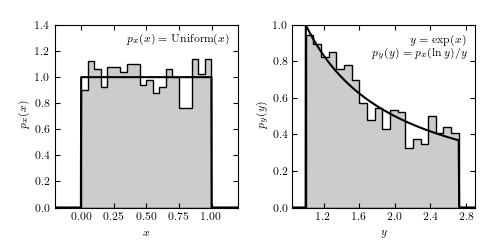

Transformation of Distribution¶
This figure shows the transformation of a distribution

# Author: Jake VanderPlas <vanderplas@astro.washington.edu>
# License: BSD
# The figure produced by this code is published in the textbook
# "Statistics, Data Mining, and Machine Learning in Astronomy" (2013)
# For more information, see http://astroML.github.com
import numpy as np
from scipy import stats
from matplotlib import pyplot as plt
#------------------------------------------------------------
# Set up the data
np.random.seed(0)
# create a uniform distribution
uniform_dist = stats.uniform(0, 1)
x_sample = uniform_dist.rvs(1000)
x = np.linspace(-0.5, 1.5, 1000)
Px = uniform_dist.pdf(x)
# transform the data
y_sample = np.exp(x_sample)
y = np.exp(x)
Py = Px / y
#------------------------------------------------------------
# Plot the results
fig = plt.figure(figsize=(8, 4))
fig.subplots_adjust(left=0.1, right=0.95, wspace=0.25, bottom=0.15, top=0.9)
ax = fig.add_subplot(121)
ax.hist(x_sample, 20, histtype='stepfilled', fc='#CCCCCC', normed=True)
ax.plot(x, Px, '-k')
ax.set_xlim(-0.2, 1.2)
ax.set_ylim(0, 1.4001)
ax.xaxis.set_major_locator(plt.MaxNLocator(6))
ax.text(0.95, 0.95, r'$p_x(x) = {\rm Uniform}(x)$',
va='top', ha='right',
transform=ax.transAxes)
ax.set_xlabel('$x$')
ax.set_ylabel('$p_x(x)$')
ax = fig.add_subplot(122)
ax.hist(y_sample, 20, histtype='stepfilled', fc='#CCCCCC', normed=True)
ax.plot(y, Py, '-k')
ax.set_xlim(0.8, 2.9)
ax.xaxis.set_major_locator(plt.MaxNLocator(6))
ax.text(0.95, 0.95, '$y=\exp(x)$\n$p_y(y)=p_x(\ln y) / y$',
va='top', ha='right',
transform=ax.transAxes)
ax.set_xlabel('$y$')
ax.set_ylabel('$p_y(y)$')
plt.show()